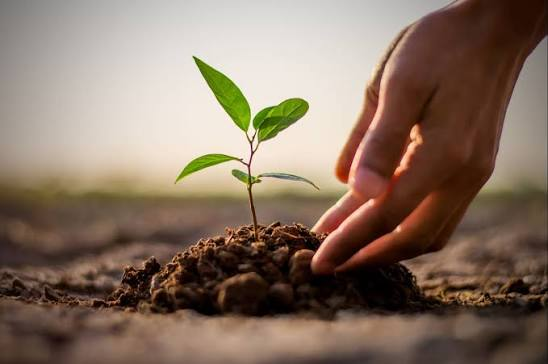

Komunitas peduli lingkungan
Bumi lebih hijau.
Mulai dari kita.
Karena perubahan besar dimulai dari langkah kecil. Tanam harapan, kurangi sampah, dan bergerak bersama untuk masa depan bumi.

Peduli bumi itu lebih seru bersama.
GreenLife adalah komunitas lingkungan yang mengajak pelajar, mahasiswa, dan masyarakat umum ikut menjaga bumi lewat aksi nyata.
Dari menanam pohon, memilah sampah, membersihkan lingkungan, hingga belajar gaya hidup berkelanjutan, semua orang bisa mengambil bagian.
Lihat aksi kami